Big Orange Crayonmusical thingsMe and Jeremy, Jude at the Empire State Plaza 9/24/99 With pictures at the bottom! This was a pretty cool show, and Me and Jeremy show number 6 for me! I kinda feel that they're better to watch in a small place like Valentine's, but I still love seeing them whenever I can. Plus, Matt is really into Jude (or was before he left), so I wanted to check him out, too. The headliner was Marcy Playground, but they suck so I didn't stay around to watch them. So ha. Plus, this was my first show where I had my new camera, which made things a little more fun and a little less so: it was cool to be able to take pictures of everybody (66 in all) but on the other hand, I didn't jump around and act like a fool as much as I normally would because I either was taking pictures or afraid of dropping my camera. Oh well. I think before the next show I'll rig some sort of super reliable system to keep it strapped to me when I'm not using it, since a pouch aided only by purple electrical tape doesn't really fill me with confidence... Bryan was cool enough to let me borrow his car and I set out, with my way cool Momus album which I had just gotten in the mail a couple of hours prior spinning in the player. Someone honked at me because I refused to swerve into a guard rail so they could go faster. When I got there, I just sort of wandered around for a while. This was the first time I went to a show without bringing anyone else with me, so that took some getting used to (everybody I knew at school either had classes or jobs or other obligations, or just weren't in when I called. Perhaps its better to plan these sorts of things more than a half hour before leaving.) I took some pictures of the very Zelda-esque square trees in the plaza, and a really cool fire hydrant that had it's own plaque that said "HYDRANT". And a pidgeon. I ran into Zak's dad, too, which is kinda neat since I can't actually see Zak as much cuz, you know, were both in college now (Nick's brain: DENY! DENY! We are just making this up! We are still in preschool! Let's go look for salimanders!). Anyway, Me and Jeremy started the show off, and they were really good. I love seeing them, and it seems like its one of the things that I do more than anything else around here. I think I see more Me and Jeremy shows than shows for all other bands combined. But I don't mind, cuz they're cool. There were people with video cameras there, which is pretty cool, but I don't know what they were for. Maybe Me & Jeremy is really fameous, now! Or maybe not. I don't know. Anyway, er, the show, yeah. It was cool. They played a lot of new songs and I liked them all. Randall did this silly song where he was going all Barry White and stuff and the other people made moaning sounds in the background, it was fun. I still think that they are more of a band for smaller venues, but that might just be me. It seems that one of the coolest things about Me and Jeremy shows is that they are, like, really people so it seems kind of weird when they are on this big stage in front of people who are either fans like me and are like "who are these other people? Why are they looking at me like that?" or the people who came because Marcy Playground is fameous and were looking at their watches. But that didn't really matter once Me and Jeremy started playing, it seemed that everyone was really into it, at least from where I was, but I was in the front, so I don't really know. People were dancing and it was cool, but they weren't going nuts like at Valentine's, but thats just a matter of where they played rather than the band. They ruled, damnit. Jude was on next. It was just him and his acoustic guitar, which was cool. I would say he was like a male Ani DiFranco, but I've never really listened to her, so I can't really say that. But he was good regardless. He did a cover of Nirvana's "Heart Shaped Box" and did a sort of hodge-podge cover thingie of "cheesy songs" that I can't remember now, but it was silly. He was really good, and I think he probably gets radio play and all that (I haven't listened to mainstream radio in so long...), but he wasn't above singing in a really high falsetto when he felt like it. I liked him. I wasn't up in front for his set, I sat back with Zak's dad and took some fairly awful pictures cuz I suck at using a 6x zoom, as you can see here... the far away ones aren't blurry, but they're, you know, far away. When he was done, I left since I don't like Marcy Playground at all. A nice friday, though. I'm so glad I didn't have any classes. Me and Jeremy rules! Go see them whenever you can! And Jude is pretty cool, too! Yay! Pictures before the show 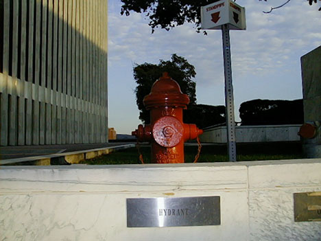 A well labeled fire hydrant. 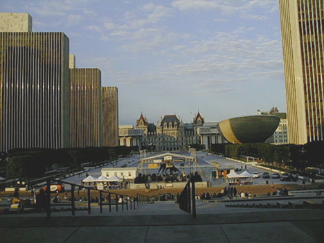 The plaza 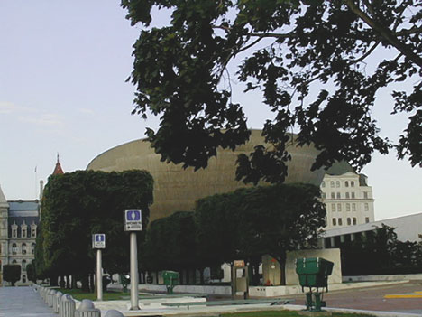 Square trees and egg 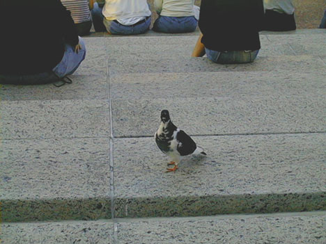 A pidgeon Me and Jeremy! 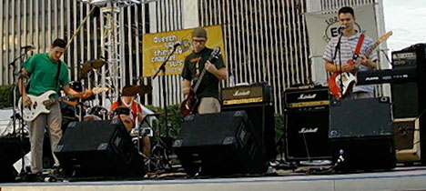 Everybody! 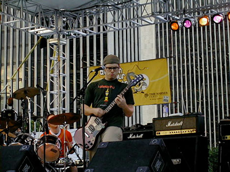 Josh concentrating 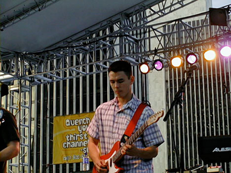 Mark doing a guitar solo! 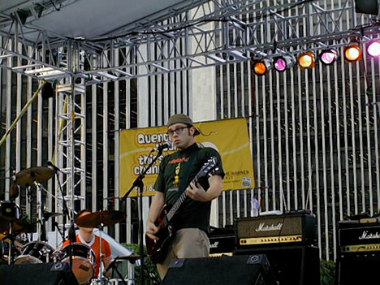 Josh looking suprised 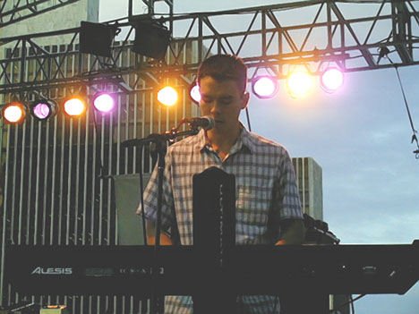 Mark playing keyboard! 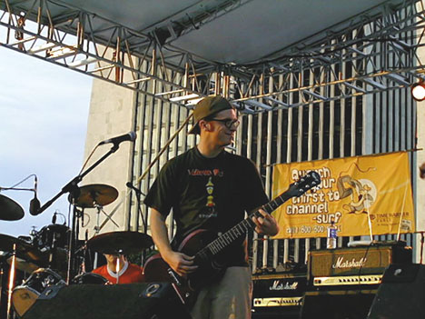 Josh smiling 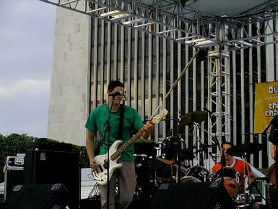 Randall and Jeremy 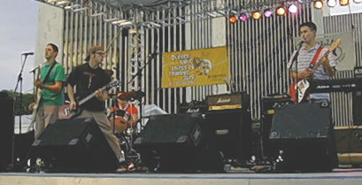 Everybody again! Jude 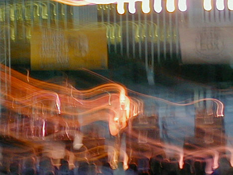 Blurry Jude 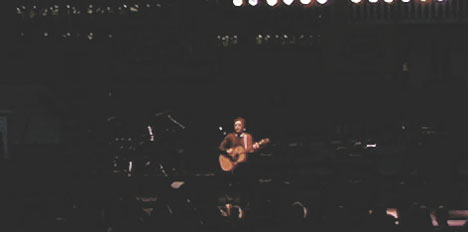 Far away Jude 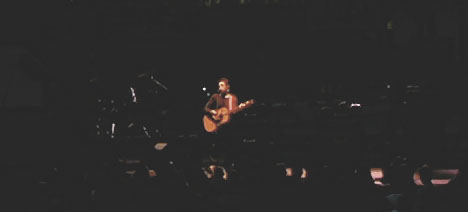 Another far away Jude |